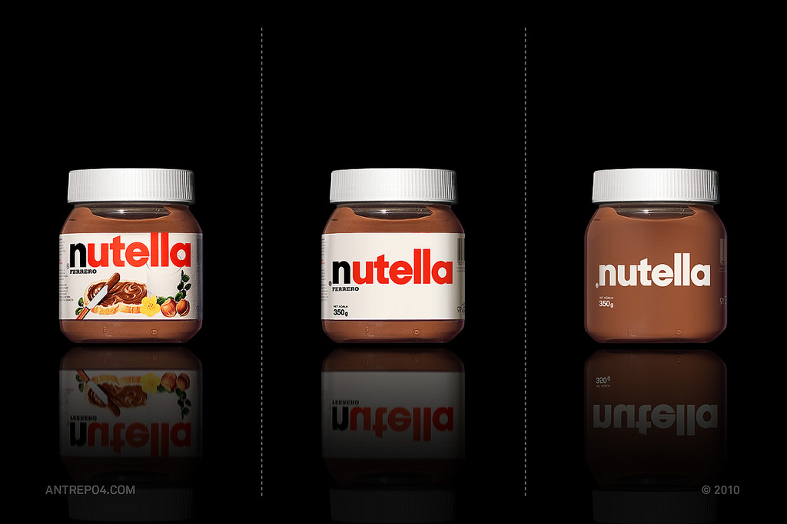

Spin Around - Sword Cam
Now you know what it looks like when you strap a GoPro HD to the tip of a sword.
Found on Kottke
Now you know what it looks like when you strap a GoPro HD to the tip of a sword.
Found on Kottke
You can’t learn in school what the world is going to do next year.
- Henry Ford
Reblogged from Startup Quote
Writer and editor Bruce Nussbaum presents the case that we are now entering the “Twilight of Pessimism for America” and finally moving beyond the notion that America is on the decline. Although Nussbaum is writing specifically regarding the perception and attitude of Americans I believe that the same sense of optimism will be true in business, technology and the general view of the future.
Beneath the noise of politics, the Know-Nothingism, the anger, the arrogance of belief and the corruption masquerading as lobbying, another culture is being built in cities where the future is more evenly distributed an far more optimistic. It is where political leaders really lead, Gen Yers build their lives on their own platforms and people wait for the bad movie that is Washington to end. I’m betting that in the decade ahead, the signal that is America’s comeback will grow stronger and replace the current noise.
Here’s to a new optimistic year and era!
Artist Shinichi Maruyama creates sculptures and still art out of typically fluid materials. In his Water Sculpture series he shapes falling water with his hands, and then freezes it in time with a high frames-per-second camera like the Phantom. Check out his other works Kusho and Nihonga.
Found on Fubiz
Good design defuses the tension between functional and aesthetic goals precisely because it works within the boundaries defined by the functional requirements of the communication problem. Unlike the fine arts, which exists for their own sake, design must always solve a particular real-world problem.
Kevin Mullet & Darrell Sano

Multi-disciplinary design consultancy Antrepo took on the challenge of stripping down various brands to a minimalistic state to strengthen the brand by removing the noise. For each product they took it through two steps to simplify and then simplify more. This fun challenge is more or less the reverse of the Microsoft iPod packaging spoof video. See the entire project on Antrepo’s blog A2591.
Found on The Fox Is Black
Excellent case study from Think Vitamin on the benefits video for online conversion and the importance of metrics and testing.
The takeaway here is that potential customers want a quick summary of the product, not an actual demo. The bigger takeaway here though is this: you have to be testing your site to see what works and what doesn’t. Going on a gut feeling won’t work. In fact, this very method that worked better for us may not work for you. You won’t know until you test.
With subtle glowing edges and high-contast elements, Traction is the latest futuristic yet simple three column premium theme from Style Hatch. Choose either the light or dark style and customize your colors, background and 60+ appearance options—see all the customization options. Buy the theme for only $49.
I had a lot of fun building this theme out with the latest HTML5 and CSS3 techniques. If you look closely at the source you’ll notice only three images are being used in the theme at a light-weight 20kb. All of the rounded corners, inner and outer glows, drop shadows, font-face icons, and insets are stylized using CSS3. Plus, I added CSS3 animation touches throughout the theme—try it out by rolling over a few links, linked images, and clicking inside the search bar. If you’re viewing the site on an anchient browser like Internet Explorer everything will degrade nicely to more simplistic design elements.
If you have any other questions about the theme or need support send me an email - traction@stylehatch.co. Also expect updates to Backburner, Inspire Well, Nova and Savory before the end of the year.
Digital agency Lalivingston created an infographic of the process of water collection to purification for Madrid’s water supply company Canal Isabel II. They did a fantastic job with the combination of technical drawings, 3d elements, infographics and animation.
The key skill of the innovator is error recovery not failure avoidance.
Randy Nelson, Pixar
Japanese band SOUR along with a long list of creative, technical, and design credits created this unique music video that combines your Facebook, Twitter, geo-location and webcam data. I can’t say that I’m a fan of the music itself, but the technical execution is well done.
I can confirm that connecting to Facebook and Twitter does not auto-post anything to your accounts.
Director Joseph Kosinki is making his big-screen directorial debut with the upcoming TRON: Legacy movie after a well accomplished career as commercial director behind the “Starry Night” - Halo 3 and “Mad-World” - Gears of War commercials. While creating the visual look for TRON Kosinski relied on his background architecture to create the scientific, geometrical and glossy world.
In architecture school, Joseph Kosinski had to post his work in class for professor critiques before returning to the drawing board to fix his mistakes. Years later, he used the same approach to codify the look of Disney’s Tron: Legacy
Inspired by real-world architects Kosinki looked to the clean and stark pioneers of modern architecture like Ludwig Mies van der Rohe and Louis Kahn. “This is a world that had to be designed from scratch,” says Kosinski. “I don’t know how you can direct a movie like this if you’re not interested in design and architecture. It became the guiding philosophy.”
Read the entire interview with Joseph Kosinki on Fast Company.
The more people we have on our team, the less room there is in the elevator and the more complicated everything gets.
- David Karp
Tumblr’s building does have a tiny elevator. When I stopped by a few weeks ago somehow we were all able to squeeze in there along with Pasquale D’Silva. Well done Tumblr team for recovering from the short (relatively) outage. I can only imagine how intense the last 48 hours have been for the whole team.
Via Startup Quote

Photographer Ruud Baan and stylist Isis Vaandrager captured the founders of the Dutch design studio RAAR (“raar” is Dutch for strange). I imagine they had a blast shooting this.
Found on Fubiz
As digital marketers seek to increase profits, they almost always make the same mistake. They continue to add more clutter, messaging and offers, because, hey, it’s free. […] Once you overload the user, you train them not to pay attention. More clutter isn’t free. In fact, more clutter is a permanent shift, a desensitization to all the information, not just the last bit.
Seth Godin - The Inevitable Decline Due to Clutter
Adding more messages, ads, promotions, and channels is never better. The trick is to learn restraint and practice the art of focusing your efforts.